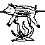

Boar Spit Roast

> Home > Boar Spit Roast
Description
A must know for hunting trips and setting up campfires.
With some bushcraft this can be done almost anywhere.
This can be critical for survival and group morale if done well.
Ingredients
- Boar, butchered
- Skewer
- Seasoning
Recipe Steps
- Prepare the prized meat with seasoning and put on the skewer
- Hang over a fire and rotate to cook evenly until done
- Celebrate your successful hunt